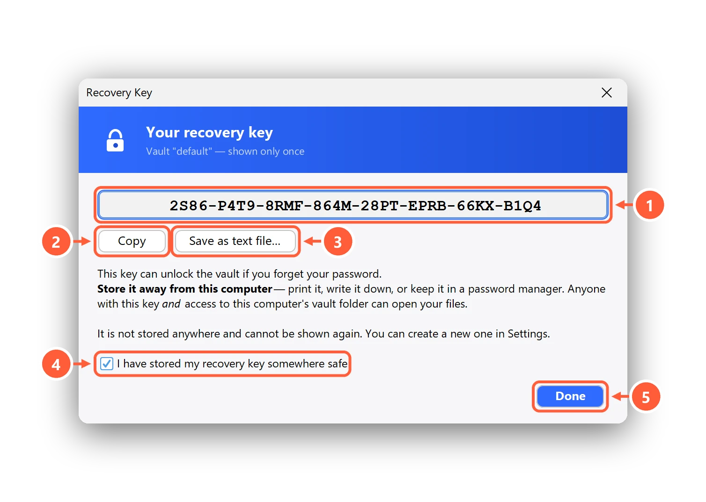

What a post-quantum recovery key is, and why your encryption needs one
Real encryption has an uncomfortable property: if you forget the password, nobody can let you back in. There's no "reset password" email, because there's no company holding a copy of your key. That's exactly what makes it secure — and exactly what makes people nervous.
The answer is a recovery key: a second, very long key, written down once and stored away from your computer.
How a recovery key works
When you create a vault, Clavis generates a random recovery key and uses it to seal a copy of what's needed to unlock the vault. The key itself is shown to you once and never saved on your PC. If you later forget your password, you type the recovery key and you're back in — Clavis even shows you the forgotten password so you can note it down.

Why "post-quantum"?
Most public-key cryptography in use today (RSA, elliptic curves) could be broken by a large enough quantum computer. Such machines don't exist yet — but encrypted data can be copied today and stored until they do. This is called "harvest now, decrypt later", and it matters for anything that has to stay private for years: medical records, legal papers, family documents.
Clavis seals the recovery key with a hybrid: classical X25519 plus ML-KEM-768, the post-quantum algorithm standardised by NIST as FIPS 203. To get in, an attacker would have to break both. If either one holds, your files do. (The file encryption itself, AES-256-GCM, is already considered safe against quantum computers at that key size.)
How to store a recovery key
- Print it or write it down and keep it with your passport or other important papers.
- Or put it in a password manager — one that's protected by a different password than your vault.
- Never save it as a text file next to your encrypted files or in the same cloud folder.
- If you think someone saw it, make a new one: Settings → Recovery key → Replace… The old one stops working immediately.
Moving to a new computer? A vault backup carries the recovery key with it, encrypted. Step-by-step help: Your recovery key: save it, use it, replace it.